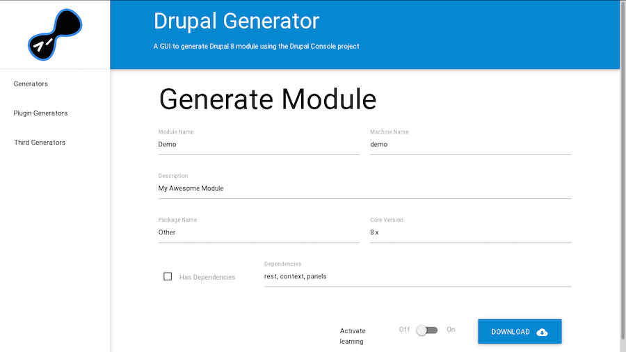

Speeding up Drupal 8 development using
Drupal Console

About us
What is the Drupal Console?
It is a suite of tools that you run on a command line interface (CLI) to generate boilerplate code and interact with a Drupal 8 installation.
Who maintain this project?

David Flores | @dmouse

Eduardo García | @enzolutions

Jesús Manuel Olivas | @jmolivas

Omar Aguirre | @omers
Supporting organizations


Why should you care about it?

How does Drupal Console help?
Generating the code and files required by a Drupal 8 module.
Interacting with your Drupal installation.
Learning Drupal 8.
Where do I find the project?
Download Drupal Console
Using the Installer
Install the Console locally by running the installer
in your project directory:
$ curl -LSs http://drupalconsole.com/installer | php
Access console from anywhere on your system
$ mv console.phar /usr/local/bin/drupal
You can now execute console using:
$ drupal
Updating the project
Depending on the download method:
$ drupal self-update
$ console self-update
$ php console.phar self-update
What can you do with
Drupal Console?
Generate the code and files
required by a Drupal 8 module.
generate:module
generate:form:config
generate:plugin:block
$ drupal generate:plugin:block
--module="drupalcon"
--class-name="ExampleBlock"
--label="example_block"
--plugin-id="example_block"
--no-interaction
generate:entity:content
$ drupal generate:entity:content
--module="drupalcon"
--entity-class="Foo"
--entity-name="foo"
--no-interaction
Interact with your Drupal
installation.
Learn Drupal 8.
Using --learning option
$ drupal generate:controller
--module="drupalcon"
--class-name="HelloController"
--method-name="hello"
--route="/hello/{name}"
--learning
--no-interaction
Automate command execution
$ drupal chain
--file=~/path/to/start-project.yml
Write an integration
generate:command
$ drupal generate:command
--module="drupalcon"
--class-name="HelloCommand"
--command="example:hello"
--no-interaction
webprofiler

How to contribute?
Getting the project
Fork your own copy of the Console repository
Clone your forked repository.
$ git clone git@github.com:[your-git-user-here]/DrupalAppConsole.git
Download dependencies using componser.
$ cd /path/to/DrupalAppConsole
$ composer update --no-dev
Contributors
Where are they from

Spread the word and love.

@drupalconsole | #drupalconsole
Roadmap
Increase code coverage.
Improve documentation and translations.
Improve verbose code-output.
Site alias implementation.
Dummy content generation.
Content staging export/import.
Drush and Console integration
Resistance is futile
https://github.com/drush-ops/drush/pull/1337One more thing...
GUI for the CLI.
